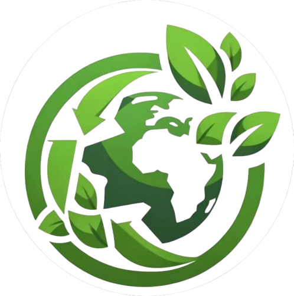

<!DOCTYPE html>
<head>
  <link rel="stylesheet" href="../style.css" />
  <link rel="stylesheet" href="../css/footer.css" />
</head>

<footer class="footer">
  <div class="footer__logo">
    
  </div>
  <div class="footer__container">
    <div class="footer-left">
      <ul>
        <li>关于我们</li>
        <li>联系我们</li>
        <li>志愿者招募</li>
        <li>环保行动</li>
        <li>加入社群</li>
      </ul>
    </div>
    <div class="footer-right">
      <p>
        本页面由 GreenEarth Initiative 构建，旨在宣传可持续发展与生态保护。<br />
        欢迎个人和非商业用途使用本页面内容，转载请注明来源。<br />
        页面最后更新于：2025/06/03
      </p>
    </div>
  </div>
</footer>
